1 Spatial Data

1.1 Synopsis
The goal of this activity is to introduce you to spatial data types and their manipulation and analysis. Functionally, we will be working with two kinds of spatial data: vector and raster data. Vector data can be considered as a finite set of points that may or may not be connected. In R, these points can be used directly, as a numeric data type, or as a Spatial class object. The sp library contains a lot of functions that help deal with points, lines, and polygons and this is going to be a short overview of how they can be derived and manipulated in the pursuit of landscape genetic studies.
Rasters are a form of data that is georeferenced and (somewhat) more continuous. Raster data is perhaps best envisioned as a matrix of values, whose entries represent spatially referenced data points (pixels). The raster itself can be visualized as you could for normal matrix output. What makes a raster different, however, is that it is (or should be) georeferenced. This means that each element of the matrix represents some measurement on the ground having a specific location and spread—sometimes referred to as granularity. This is analogous to an image, where if you zoom in on it enough, you will be able to differentiate between individual pixels, each with its own color value. Raster representation specifies each pixel in terms of a location and size associated with that value that we can map onto the earth.
1.2 Objectives
The specific objectives of this activity include:
- Familiarize yourself with geographic projections and how to manipulate both
Spatial*andrasterprojections, ellipses, and datum. - Learning about the
splibrary and how to create, manipulate, display, and otherwise useSpatial*objects to represent spatially relevant data. - Learn how to make, acquire, manipulate, and display raster data to represent (semi) continuous landscape data.
- Modify raster extents, find boundaries, and extract useful data from
rasterandSpatial*data objects.
1.3 Logistics on Data
Since this is the first hands-on practicum, it makes sense to standardize a few things. All activities for this workshop will be displayed in html5 format due to some of the display functions that rely upon javascript libraries. It is perhaps more common to provide these as PDF printouts, but that format cannot be dynamic. Much of what we want to do will be creating maps and looking at complicated data, we do not want limit ourselves to static presentations.
If you are not in the habit of using RStudio, I would recommend that you use it for this course. Please make a project for this course and use that project throughout the week so we can minimize the problems associated with setting working directories, finding proper paths, etc. If you need some help on this, please ask, we are here to help.
I am also going to assume that the data we have provided is located in a folder called LGDA-Data that is in the same directory as this document. When loading data in this and subsequent activities, I will assume that this is your working directory.
If at any point, you have questions, feel free to ask.
1.4 Projections
Before we break into the data, we must cover a bit about projections. Our ability to use and understand spatial data is dependent upon understanding geographic ellipses, coordinate systems, and datum. A spatial projection is a mathematical representation of a coordinate space used to identify geospatial objects. Because the earth is both non-flat and non-spheroid, we must use mathematical approaches to describe the shape of the earth in a coordinate space. We do this using an ellipsoid—a simplified model of the shape of the earth. Common ellipsoids include:
- NAD27 (North American Datum of 1927) based upon land surveys
- NAD83 based upon satellite data measuring the distance of the surface of the earth to the center of the plant. This is also internationally known as GRS80 (Geodetic Reference System 1980) internationally.
- WGS84 (World Geodetic System 1984) is a refinement of GRS80 done by the US military that was used in the development of GPS systems (and subsequently for all of us).
A projection onto an ellipsoid is a way of converting the spherical coordinates, such as longitude and latitude, into 2-dimensional coordinates we can use. There are three main types of approaches that have been used to develop various projections. (see wikipedia for some example imagery of different projections).
These include:
- Azimuthal: An approach in which each region of the earth is projected onto a plane tangential to the surface, typically at the pole or equator.
- Cylindrical: This approach projects the surface of the earth onto a cylinder, which is ‘unrolled’ like a large map. This approach ‘stretches’ distances in a east-west fashion, which is why Greenland looks so large…
- Conic: Another ‘unrolling’ approach, though this time instead of a cylinder, it is projected onto a cone.
All projections produce bias in area, distance, or shape (some do so in more than one), so there is no ‘optimal’ projection. To give you an idea of the consequences of these projections, I’ll use the United States map as an example and we can visualize how it is projected onto a 2-dimensional space using different projections.
1.4.1 Equatorial Projections
These are projections centered on the Prime Meridian (Longitude=0)
library(maps)
par(mfrow=c(2,2), mar=c(0,0,0,0)) # makes 2x2 grid of images with no margin
map("state",proj="mercator",main="mercator")
map("state",proj="mollweide", main="mollweide")
map("state",proj="gilbert", main="gilbert")
map("state",proj="cylequalarea",par=39.83)
Figure 1.1: Mercator, Mollweide, and Gilbert equatorial projections along with a cylequalarea projection centered on the middle of the US.
1.4.2 Azimuth Projections
These projections are centered on the North Pole with parallels making concentric circles. Meridians are equally spaced radial lines.
par(mfrow=c(2,2), mar=c(0,0,0,0))
map("state",proj="orthographic")
map("state",proj="orthographic")
map("state",proj="perspective", param=8)
map("state",proj="gnomonic")Figure 1.2: Orthographic, stereographic, perspective, and gnomonic projections.
1.4.3 Polar Conic Projections
Here projections are symmetric around the Prime Meridian with parallel as segments of concentric circles with meridians being equally spaced.
par(mfrow=c(1,2), mar=c(0,0,0,0))
map("state",proj="conic",par=39.83)
map("state",proj="lambert",par=c(30,40))Figure 1.3: Conic and Lambert projections.
1.4.4 Miscellaneous Projections
These are some additional miscellaneous projections, provided for fun mostly, to show some more diversity in the ways we have come up with mapping points onto 2-dimensional displays.
par(mfrow=c(2,2), mar=c(0,0,0,0))
map("state",proj="square")
map("state",proj="hex")
map("state",proj="bicentric", par=-98)
map("state",proj="guyou")Figure 1.4: Miscellaneous projections (Square, hex, bicentric, and Guyou) highlighting some of the more excentric ways of displaying data.
1.4.5 Coordinate Systems
Onto this ellipsoid, we must define a set of reference locations (in 3-space) called datum that help describe the precise shape of the surface. We typically are dealing with a combination of data that we’ve collected and that we’ve attained from some other provider. In most GIS applications, the coordinate systems we encounter are either:
- UTM (Universal Transverse Mercator) measuring the distance from the prime meridian for the x-coordinate and the distance from the equator (often called northing in the northern hemisphere) for the y-coordinate. These distances are in meters and the globe is divided into 60 zones, each of which is 6 degrees in width. Geographic coordinate systems use longitude and latitude. For historical purposes these are unfortunately reported in degrees, minutes, seconds, a temporal abstraction that is both annoying and a waste of time (IMHO).
- Decimal degrees, while less easy to remember, are easier to work with in R.
- State Planar coordinate systems are coordinate systems that each US State has defined for their own purposes. They are based upon some arbitrarily defined points of reference and another pain to use (IMHO). Given the differential in state area, some states are also divided into different zones. Maps you get from municipal agencies may be in this coordinate system. If your study straddles different zones or even state lines, you have some work ahead of you…
It is best to use a system that is designed for your kind of work. Do not, for example, use a state plane system outside of that state as you have bias associated with the distance away from the origin. That said, Longitude/Latitude (decimal degrees) and UTM systems are probably the easiest to work with in R.
1.4.6 Projection Summary
It is in your best interest to get your data into a single and uniform projection, in the same coordinate system, with the same datum. Until you do that, you cannot really start working with your data. In the sections below, we show how to set these and reproject them for uniformity.
1.5 The sp Library
The sp Library is a large and complicated library that you will learn incrementally, like pulling layers of an onion… It is a very powerful tool to use and makes our lives rather enjoyable once you get the hang of it. Each object is build within a hierarchy of classes that looks like:

Figure 1.5: A general schematic of sp object inheritance. Here the generic ‘Object’ is taking the place of Point, Line, Polygon, Pixel, and other data structures.
In the following sections, I go through three basic data types, Point, Line, and Polygon, providing examples that we create de novo as well as extract from the Araptus attenuatus data set (in gstudio) and from WorldClim (also present in the LGDA-Data folder.)
1.5.1 Points
Points are defined by SpatialPoints objects. A collection of points may have additional data associated with each location and would make a SpatialPointsDataFrame. This is a bit different than the normal data.frame objects we’ve been using with coordinates in them already—in fact it is the opposite of that. It is a set of points within which is located a data.frame rather than data.frame that has within it a set of points.
Confused yet? Lets get to the point and make some coordinates.
library(sp)
x <- c( -110.2725, -110.0960, -109.3270 )
y <- c( 24.21441, 24.0195, 26.63783 )
coords <- cbind( x, y )
pts <- SpatialPoints( coords )
pts## SpatialPoints:
## x y
## [1,] -110.2725 24.21441
## [2,] -110.0960 24.01950
## [3,] -109.3270 26.63783
## Coordinate Reference System (CRS) arguments: NASince we use coordinates all the time in our analyses, gstudio has included some helper functions as long as you are keeping our data in a data.frame. In the Arapatus attenuatus data set there are locale coordinates defined as Longitude and Latitude. By default it produces just a data.frame.
library(gstudio)
data(arapat)
coords <- strata_coordinates(arapat)
summary(coords)## Stratum Longitude Latitude
## 101 : 1 Min. :-114.3 Min. :23.08
## 102 : 1 1st Qu.:-112.9 1st Qu.:24.52
## 12 : 1 Median :-111.5 Median :26.21
## 153 : 1 Mean :-111.7 Mean :26.14
## 156 : 1 3rd Qu.:-110.4 3rd Qu.:27.47
## 157 : 1 Max. :-109.1 Max. :29.33
## (Other):33However, we can also derive these points directly as a SpatialPoints object defined in the sp library by setting the optional flag as.SpatialPoints=TRUE.
pts <- strata_coordinates( arapat, as.SpatialPoints = TRUE )
pts## class : SpatialPoints
## features : 39
## extent : -114.2935, -109.1263, 23.0757, 29.32541 (xmin, xmax, ymin, ymax)
## coord. ref. : NANotice that there is no coordinate reference system in the default extraction. This is because you can pass a wide array of coordinates to this function and it only takes the centroid. It is up to you to define the projection and datum for the data. If it is Long/Lat data as in the example, it can be defined as:
proj <- "+proj=longlat +datum=WGS84 +no_defs +ellps=WGS84 +towgs84=0,0,0"
proj4string(pts) <- CRS(proj)
pts## class : SpatialPoints
## features : 39
## extent : -114.2935, -109.1263, 23.0757, 29.32541 (xmin, xmax, ymin, ymax)
## coord. ref. : +proj=longlat +datum=WGS84 +no_defs +ellps=WGS84 +towgs84=0,0,0plot( pts, axes=TRUE, xlab="Longitude", ylab="Latitude")
Any set of x- and y- coordinates can be turned into a SpatialPoints object. If we are to associate data with those points, the data has to have the same number of observations as there are coordinates. In our case here, we have 39 populations and as an example I’ll determine the number of individuals genotyped in each population as a
df <- data.frame( table(arapat$Population) )
names(df) <- c("Population","N")
pts.df <- SpatialPointsDataFrame(pts,df)
pts.df## class : SpatialPointsDataFrame
## features : 39
## extent : -114.2935, -109.1263, 23.0757, 29.32541 (xmin, xmax, ymin, ymax)
## coord. ref. : +proj=longlat +datum=WGS84 +no_defs +ellps=WGS84 +towgs84=0,0,0
## variables : 2
## names : Population, N
## min values : 101, 4
## max values : SFr, 19You can translate it back into a data.frame object as:
as.data.frame( pts.df )[1:5,]## Population N x y
## 88 101 9 -114.2935 29.32541
## 9 102 8 -113.9449 29.01457
## 84 12 10 -113.6679 28.96651
## 175 153 10 -113.4897 28.72796
## 177 156 6 -113.9914 28.66056or access the data within the data.frame directly (thereby not needing to make a new object) using the attribute @ operator
slotNames(pts.df)## [1] "data" "coords.nrs" "coords" "bbox" "proj4string"pts.df@data[1:5,]## Population N
## 1 101 9
## 2 102 8
## 3 12 10
## 4 153 10
## 5 156 6Since it is a SpatialPoints object, you can get information about it such as the bounding box (e.g., the coordinates of a box that encloses all the points).
bbox(pts.df)## min max
## x -114.2935 -109.12633
## y 23.0757 29.325411.5.2 Lines
Lines are created by pairs of points. A single Line object
c1 <- cbind(coords$Longitude[1:2], coords$Latitude[1:2])
c2 <- cbind(coords$Longitude[2:3], coords$Latitude[2:3])
L1 <- Line(c1)
L2 <- Line(c2)
L1## An object of class "Line"
## Slot "coords":
## [,1] [,2]
## [1,] -114.2935 29.32541
## [2,] -113.9449 29.01457coordinates(L1)## [,1] [,2]
## [1,] -114.2935 29.32541
## [2,] -113.9449 29.01457A collection of Line objects can be put into a Lines object.
Ls1 <- Lines( list(L1), ID="88 to 9")
Ls2 <- Lines( list(L2), ID="9 to 84")
Ls1## An object of class "Lines"
## Slot "Lines":
## [[1]]
## An object of class "Line"
## Slot "coords":
## [,1] [,2]
## [1,] -114.2935 29.32541
## [2,] -113.9449 29.01457
##
##
##
## Slot "ID":
## [1] "88 to 9"And if they are spatial in context (e.g., if we need to plot them in any way, shape, or form), we need to put them into a SpatialLines object, which is also constructed from a list of Lines objects.
SLs <- SpatialLines( list(Ls1,Ls2))
proj4string(SLs) <- CRS(proj4string(pts))
SLs## class : SpatialLines
## features : 2
## extent : -114.2935, -113.6679, 28.96651, 29.32541 (xmin, xmax, ymin, ymax)
## coord. ref. : +proj=longlat +datum=WGS84 +no_defs +ellps=WGS84 +towgs84=0,0,0plot( pts, axes=TRUE, xlab="Longitude", ylab="Latitude",
ylim=c(28.5,29.5), xlim=c(-114.5, -113))
plot( SLs, add=TRUE, col="red", lwd=2 )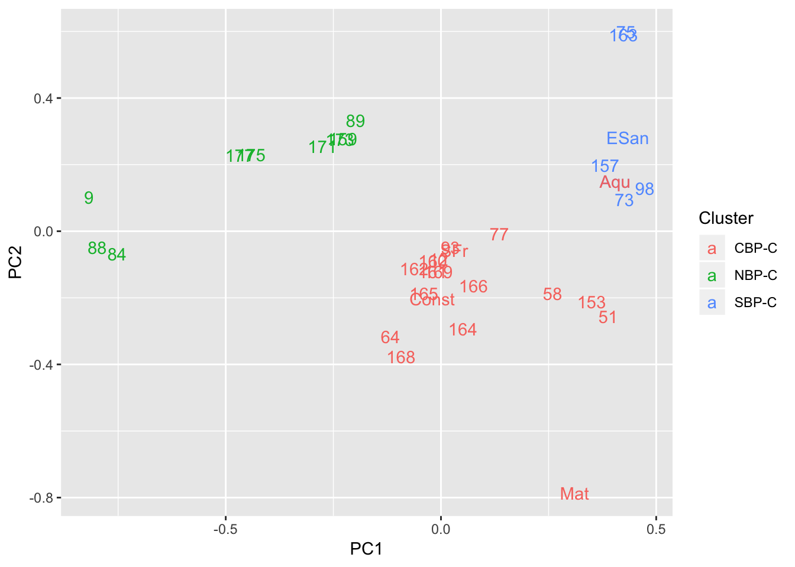
If we want to add data to the set of lines, we can associate a data.frame with each of them with internal data.
df <- data.frame( Sequence = c("First","Second"),
Like_It= c(TRUE,FALSE),
row.names = c("88 to 9","9 to 84"))
SLDF <- SpatialLinesDataFrame( SLs, df )
SLDF## class : SpatialLinesDataFrame
## features : 2
## extent : -114.2935, -113.6679, 28.96651, 29.32541 (xmin, xmax, ymin, ymax)
## coord. ref. : +proj=longlat +datum=WGS84 +no_defs +ellps=WGS84 +towgs84=0,0,0
## variables : 2
## names : Sequence, Like_It
## min values : First, TRUE
## max values : Second, FALSEas.data.frame(SLDF)## Sequence Like_It
## 88 to 9 First TRUE
## 9 to 84 Second FALSEWe can also extract the line lengths of each line.
SpatialLinesLengths(SLs, longlat = TRUE)## [1] 48.34721 27.512641.5.3 Polygons
A polygon is simply a collection of line segments that closes in on itself. We can use polygons to identify habitat, define boundaries, etc. In the short description to follow, we will create a set Polygon* objects, culminating in a SpatialPolygonsDataFrame object.
We will start with the first 5 coordinates in the arapat data set. To make the polygon, we must close the coordinates, which means take the first one we put in and append it to the end of the list of coordinates, such that in this case c[1,] == c[6,].
c <- cbind( coords$Longitude[1:5], coords$Latitude[1:5])
c <- rbind( c, c[1,])
c## [,1] [,2]
## [1,] -114.2935 29.32541
## [2,] -113.9449 29.01457
## [3,] -113.6679 28.96651
## [4,] -113.4897 28.72796
## [5,] -113.9914 28.66056
## [6,] -114.2935 29.32541Then you can construct an individual polygon object
P <- Polygon( c )
P## An object of class "Polygon"
## Slot "labpt":
## [1] -113.89179 28.89114
##
## Slot "area":
## [1] 0.1849395
##
## Slot "hole":
## [1] FALSE
##
## Slot "ringDir":
## [1] 1
##
## Slot "coords":
## [,1] [,2]
## [1,] -114.2935 29.32541
## [2,] -113.9449 29.01457
## [3,] -113.6679 28.96651
## [4,] -113.4897 28.72796
## [5,] -113.9914 28.66056
## [6,] -114.2935 29.32541As you can see, there is some additional information provided in the default layout. A few points to be made:
- The area parameter is not georeferenced as the polygon itself has no projection.
- The labpt is the coordinate where a label would be plot.
- The hole and ringDir determine if the polygon represent a hole in some other polygon (e.g., the doughnut hole and the direction it is plot).
Similar to how we constructed SpatialLines, a Polygon must be in inserted into a set of Polygons
Ps <- Polygons( list(P), ID="Bob")From which a list of can be created to make a SpatialPolygons object
SPs <- SpatialPolygons( list(Ps))
proj4string(SPs) <- CRS(proj4string(pts))
SPs## class : SpatialPolygons
## features : 1
## extent : -114.2935, -113.4897, 28.66056, 29.32541 (xmin, xmax, ymin, ymax)
## coord. ref. : +proj=longlat +datum=WGS84 +no_defs +ellps=WGS84 +towgs84=0,0,0plot( pts, axes=TRUE, xlab="Longitude", ylab="Latitude",
ylim=c(28.5,29.5), xlim=c(-114.5, -113))
plot( SPs, col="red", border="blue", lwd=2, add=TRUE )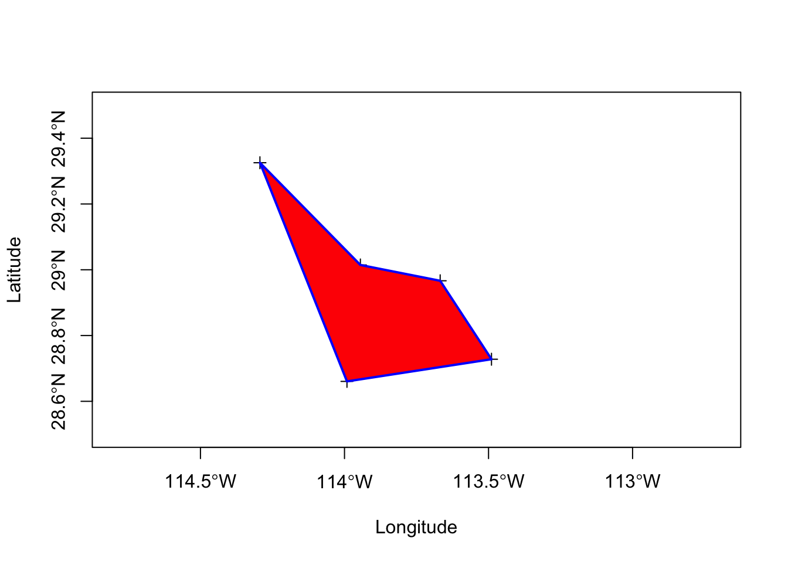
And data can be added to it making a SpatialPolygonsDataFrame (n.b., The row.names of the data.frame must match the ID we set for making the Polygons objects). If they do not, there will be an error thrown.
df <- data.frame( Populations=paste(coords$Stratum[1:5],collapse=", "),
row.names = "Bob")
SPDF <- SpatialPolygonsDataFrame( SPs, df)
SPDF## class : SpatialPolygonsDataFrame
## features : 1
## extent : -114.2935, -113.4897, 28.66056, 29.32541 (xmin, xmax, ymin, ymax)
## coord. ref. : +proj=longlat +datum=WGS84 +no_defs +ellps=WGS84 +towgs84=0,0,0
## variables : 1
## names : Populations
## min values : 88, 9, 84, 175, 177
## max values : 88, 9, 84, 175, 1771.5.4 Projecting sp objects.
In R, we use rgdal to project points. Here I load in the coordinates of the populations in the Arapatus attenuatus data set and make a SpatialPoints object out of it. Setting the proj4string() here does not project the data, I am just specifying that the data are already in the lat/long WGS84 format because that is the format it was in when I recorded the values and put them into the data file.
coords <- strata_coordinates( arapat )
pts <- SpatialPoints( coords[,2:3] )
proj4string(pts) <- CRS("+proj=longlat +datum=WGS84 +no_defs +ellps=WGS84 +towgs84=0,0,0")
pts## class : SpatialPoints
## features : 39
## extent : -114.2935, -109.1263, 23.0757, 29.32541 (xmin, xmax, ymin, ymax)
## coord. ref. : +proj=longlat +datum=WGS84 +no_defs +ellps=WGS84 +towgs84=0,0,0The CRS() function holds the definition of the projection and interfaces between the PROJ.4 and RGDAL libraries. To project a set of data points into a new coordinate systems, we use spTransform() and pass it the definition of the new system to use.
If we want to actually change the projection, ellipse, or datum, we need to project the data onto the new model. We do this using the spTransform function. Here is an example of taking the exact same data and projecting it from decimal Longitude and Latitude into Universal Transverse Mercator (UTM).
pts.utm <- spTransform(pts, CRS("+proj=utm +zone=12 +datum=WGS84"))
summary( pts.utm )## Object of class SpatialPoints
## Coordinates:
## min max
## Longitude 180128 686925.2
## Latitude 2552540 3248545.0
## Is projected: TRUE
## proj4string :
## [+proj=utm +zone=12 +datum=WGS84 +ellps=WGS84 +towgs84=0,0,0]
## Number of points: 39You can see the transformations in the coordinate system by comparing the plots below. The relative position of each point is the same, it has just been loaded into a new space.
Figure 1.6: Population locations in (A) longitude and latitude and (B) Universal Transverse Mercator coordinate systems.
1.5.5 Points, Lines, and Polygons in ggplot
I am a huge fan of the ggplot2 graphics library, mostly because it is constructed in a way that makes sense to me and it produces very beautiful graphics. You will see various ggplot plotting functions throughout the week so let me give you a brief tutorial.
The library is build upon the idea of the grammar of graphics. Essentially, a graphical display is created, sequentially, by adding (literally) components to it. These components may represent the raw data, layers of plotting geometries, spatial transformations (maps, projections, etc.), labels, summaries (expected lines, etc) and coordinate transformations. Unlike build-in graphic approaches, these are added together rather than put into a single function call. This allows us to sequentially build the graphic. Here I’m going plot the locations for the arapat data set onto a map as the final graphic but do so incrementally to demonstrate how it work.
At a bare minimum, ggplot requires your data to be in a data.frame object. Columns of data will define the x-, y-, z-, color, shape, and other characteristics.
coords <- strata_coordinates(arapat)
summary(coords)## Stratum Longitude Latitude
## 101 : 1 Min. :-114.3 Min. :23.08
## 102 : 1 1st Qu.:-112.9 1st Qu.:24.52
## 12 : 1 Median :-111.5 Median :26.21
## 153 : 1 Mean :-111.7 Mean :26.14
## 156 : 1 3rd Qu.:-110.4 3rd Qu.:27.47
## 157 : 1 Max. :-109.1 Max. :29.33
## (Other):33You initiate a ggplot by specifying the data and an aesthetic. Here the aesthetic maps the names of the columns of the data onto the x- and y- axes. To show the graphical output I just print the object.
p <- ggplot( coords, aes(x=Longitude, y=Latitude))
p
There is nothing shown because we have not specified how to display the data in x- and y- space. It did however set up the range and labels for us automatically. To do that, we need to add (again literally add it to the object just like an equation) a geometric layer.
p <- p + geom_point()
p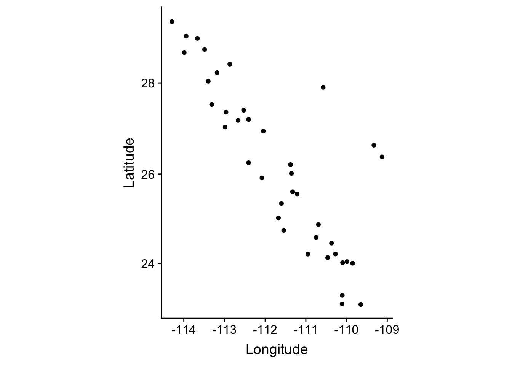
By default it makes the points filled and black. Since this is a projected set of data, we should probably change the coordinate space so it knows that these are supposed to be mapped onto a projection in decimal degrees. If you look at the figure above, you will see that the x- and y- limits are maximized in the graphic display, not scaled to be spatially coherent. To change the coordinate system, we add a coordinate transformation to the data.
p <- p + coord_map("mercator")
p
This plot does not need to be incrementally crated, it can be created as a single line of code as:
ggplot(coords, aes(x=Longitude,y=Latitude)) + geom_point() + coord_map("mercator")and it would create the same thing.
Both lines and polygons may also be created using different geometries. In both cases, you need to have your initial data.frame set up in a specific way so that the geom_* can create the line segments and polygons. See ?geom_line and geom_polygon for more information on how that works.
1.6 Rasters
Rasters are a form of data that is georeferenced and (somewhat) continuous. Raster data is perhaps best envisioned as a matrix of values, whose entries represent spatially referenced data points. The raster itself can be visualized as you could for normal matrix output. What makes a raster different, however, is that it is (or should be) georeferenced. This means that each element of the matrix represents some measurement on the ground having a specific location and spread. This is analogous to an image, where if you zoom in on it enough, you will be able to differentiate between individual pixels, it is just that for rasters, each pixel has a spatial location and size associated with it that we can map onto the earth.
You can either create raster objects de novo or you can acquire them from some external source. To create one from scratch, you start with a matrix of values and then construct the raster object using the raster() function as:
library(raster)
r <- matrix(runif(10000),nrow=100)
rnd <- raster( r )
rnd## class : RasterLayer
## dimensions : 100, 100, 10000 (nrow, ncol, ncell)
## resolution : 0.01, 0.01 (x, y)
## extent : 0, 1, 0, 1 (xmin, xmax, ymin, ymax)
## coord. ref. : NA
## data source : in memory
## names : layer
## values : 6.062211e-05, 0.9998653 (min, max)which can be visualized using the normal plot command. The raster library has overridden several of the plotting functions and you can plot raster objects and decorate the images in the same way you do for normal plotting materials (??).
plot(rnd)
There are also many available repositories for raster data including Open Source, Governmental, and Municipal locations. One common source for these data is that of http://worldclim.org. This repository contains temperature and precipitation data generalized for the entire globe.

These data are available free of charge and have been used in numerous biological studies. Moreover, they provide a set of ‘biologically relevant’ layers, called BioClim, that summarize both temperature and precipitation. They motivate these by saying:
Bioclimatic variables are derived from the monthly temperature and rainfall values in order to generate more biologically meaningful variables. These are often used in ecological niche modeling (e.g., BIOCLIM, GARP). The bioclimatic variables represent annual trends (e.g., mean annual temperature, annual precipitation) seasonality (e.g., annual range in temperature and precipitation) and extreme or limiting environmental factors (e.g., temperature of the coldest and warmest month, and precipitation of the wet and dry quarters).
These layers are encoded into 19 Bio-layers as defined in the following Table. These layers are available for download from their site directly (I recommend using the tiles approach so you do not have to download the entire world map) as well as from the R package dismo.
| Layer | Description |
|---|---|
| BIO1 | Annual Mean Temperature |
| BIO2 | Mean Diurnal Range (Mean of monthly (max temp - min temp)) |
| BIO3 | Isothermality (BIO2/BIO7 * 100) |
| BIO4 | Temperature Seasonality (standard deviation * 100) |
| BIO5 | Max Temperature of Warmest Month |
| BIO6 | Min Temperature of Coldest Month |
| BIO7 | Temperature Annual Range (BIO5-BIO6) |
| BIO8 | Mean Temperature of Wettest Quarter |
| BIO9 | Mean Temperature of Driest Quarter |
| BIO10 | Mean Temperature of Warmest Quarter |
| BIO11 | Mean Temperature of Coldest Quarter |
| BIO12 | Annual Precipitation |
| BIO13 | Precipitation of Wettest Month |
| BIO14 | Precipitation of Driest Month |
| BIO15 | Precipitation Seasonality (Coefficient of Variation) |
| BIO16 | Precipitation of Wettest Quarter |
| BIO17 | Precipitation of Driest Quarter |
| BIO18 | Precipitation of Warmest Quarter |
| BIO19 | Precipitation of Coldest Quarter |
For the purposes of this chapter, I’ll use bioclim and altitude layers from tile 22, which encompasses the spatial distribution of sampling locations in Baja California for the Araptus attenuatus dataset
Common raster formats include GeoTiff, essentially an image file with some metadata associated with it, and BIL (Binary interleaved) file formats. Both of these types are available from WorldClim. In general, the GeoTiff format is slightly easier to work with as all the data is contained within a single file, whereas the BIL format has two files for each raster (the second file is a header file that has the spatial meta data associated with it). If you do use the BIL format, the file path you pass to raster() would be of the BIL file, not the header one.
From Worldclim, I downloaded the elevation raster for Tile 22 and can load it into R using the raster() function as:
alt <- raster("./spatial_data/alt.tif")
alt## class : RasterLayer
## dimensions : 3600, 3600, 12960000 (nrow, ncol, ncell)
## resolution : 0.008333333, 0.008333333 (x, y)
## extent : -120, -90, 0, 30 (xmin, xmax, ymin, ymax)
## coord. ref. : +proj=longlat +datum=WGS84 +no_defs +ellps=WGS84 +towgs84=0,0,0
## data source : /Users/rodney/Google Drive/Teaching/Landscape Genetics/Workshop - Scottland/Landscape Genetics Data Analysis/spatial_data/alt.tif
## names : alt
## values : -202, 5469 (min, max)The alt object is summarized here. A couple of things should be pointed out here: - In total, this is an object with 12,960,000 entries in it!
- The resolution of each ‘pixel’ in this representation is 0.008, which is about 30-arc seconds or ~1km. That means that each location in the study area is represented by the same exact value as the surrounding square kilometer. Obviously, if you are working on processes whose spatial scale is relevant less than 1000 m2, this kind of data is going to be of little value to you. - The values within the matrix range from -202 upwards to 5469. This is in meters.
In addition, the raster has a spatial extent and a projection associated with it. For more information on projections see ??.
bbox( alt )## min max
## s1 -120 -90
## s2 0 30proj4string( alt )## [1] "+proj=longlat +datum=WGS84 +no_defs +ellps=WGS84 +towgs84=0,0,0"This elevation raster looks like:
plot( alt, xlab="Longitude", ylab="Latitude" )
1.7 Modifying Rasters
We can modify rasters just as easily as we can modify matrices. The square bracket indexing you use for matrices are just as effective as before. In the next example, I mask the landscape based upon elevation. I create a copy of the original raster and then make everything whose elevation is less than 500m as missing data. Plotting this over the top of the original raster shows only locations where elevation exceeds this cutoff.
alt <- raster("LGDA-Data/bioclim/alt_22.tif")
e <- extent( c(-115,-109,22,30) )
baja_california <- crop( alt, e )
baja_california## class : RasterLayer
## dimensions : 960, 720, 691200 (nrow, ncol, ncell)
## resolution : 0.008333333, 0.008333333 (x, y)
## extent : -115, -109, 22, 30 (xmin, xmax, ymin, ymax)
## coord. ref. : +proj=longlat +datum=WGS84 +no_defs +ellps=WGS84 +towgs84=0,0,0
## data source : in memory
## names : alt_22
## values : -202, 2263 (min, max)plot( baja_california, axes=TRUE, xlab="Longitude", ylab="Latitude" )
plot( pts, add=TRUE )
bc <- baja_california
bc[ bc < 500 ] <- NA
plot( baja_california, legend=FALSE, col="darkgrey" )
plot( bc, add=TRUE, legend=FALSE)
1.7.1 Stacks of Rasters
It is not uncommon to be working with many different raster layers at the same time. Instead of loading them individually, the raster library has a RasterStack object that can hold several rasters at one time and can be used in places where we would use individual rasters. Here is an example using the elevation and temperature rasters for tile 22.
files <- c("./spatial_data/alt.tif", "./spatial_data/bio1.tif", "./spatial_data/bio5.tif", "./spatial_data/bio6.tif")
bio_layers <- stack( files )
bio_layers## class : RasterStack
## dimensions : 3600, 3600, 12960000, 4 (nrow, ncol, ncell, nlayers)
## resolution : 0.008333333, 0.008333333 (x, y)
## extent : -120, -90, 0, 30 (xmin, xmax, ymin, ymax)
## coord. ref. : +proj=longlat +datum=WGS84 +no_defs +ellps=WGS84 +towgs84=0,0,0
## names : alt, bio1, bio5, bio6
## min values : -202, -20, 54, -83
## max values : 5469, 295, 424, 242Performing operations on a stack is as easy as performing them on individual layers. Here, I trim them to the hull defined above.
e <- extent( c(-115,-109,22,30) )
bio_layers <- crop( bio_layers, e )
plot(bio_layers)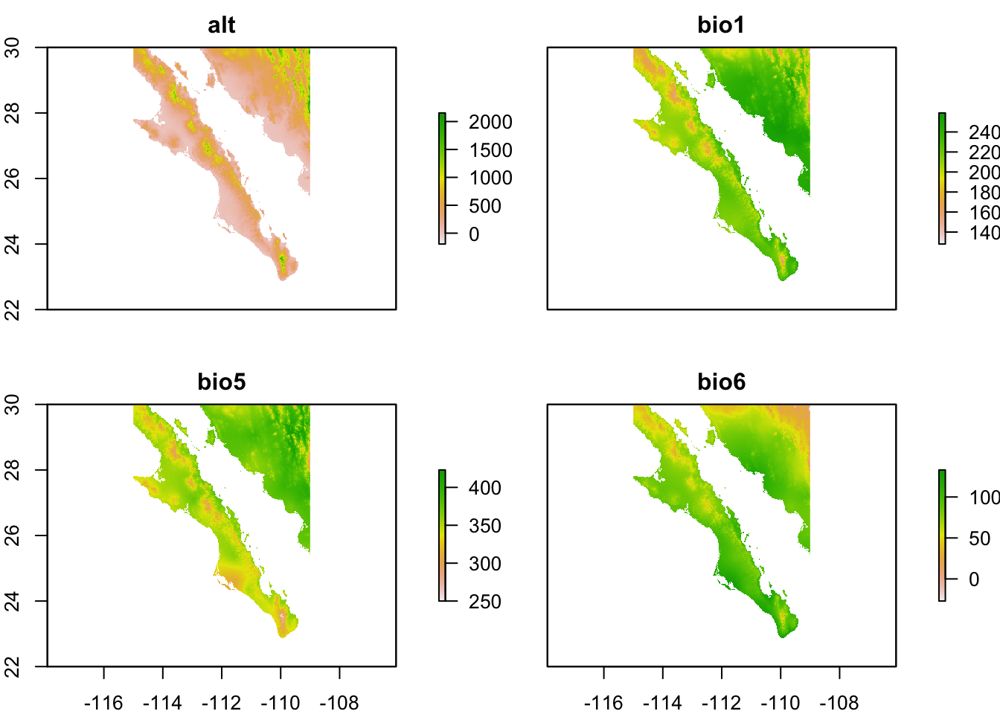
From which values may be extracted using normal methods as outlined above.
library(sp)
library(gstudio)
data(arapat)
coords <- strata_coordinates(arapat)
pts <- SpatialPoints( coords[,2:3])
coords <- strata_coordinates( arapat )
pts <- SpatialPoints( coords[,2:3] )
df <- extract( bio_layers, pts)
df <- df[ !is.na(df[,1]),]
head(df)## alt bio1 bio5 bio6
## [1,] 681 178 331 48
## [2,] 361 195 346 61
## [3,] 368 197 348 62
## [4,] 240 205 355 68
## [5,] 177 203 352 71
## [6,] 26 223 372 81And visualized normally.
library( GGally )
ggpairs(as.data.frame(df))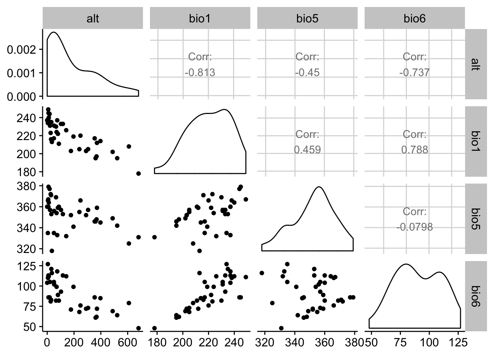
1.8 Rasters & ggplot
As is the case with a lot of data types in R, there is a way to use the ggplot library to visualize rasters. Essentially, what you need to do is to transform your raster objects into data.frame objects for ggplot’s geom_tile() function. Here is an example.
library(ggplot2)
df <- data.frame( rasterToPoints( baja_california ))
names(df) <- c("Longitude","Latitude","Elevation")
p <- ggplot( df ) + geom_tile( aes(x=Longitude,y=Latitude,fill=Elevation))
p <- p + scale_fill_gradientn( colors=c('#a6611a','#dfc27d','#f5f5f5','#80cdc1','#018571'))
p <- p + coord_equal() + xlab("Longitude") + ylab("Latitude")
p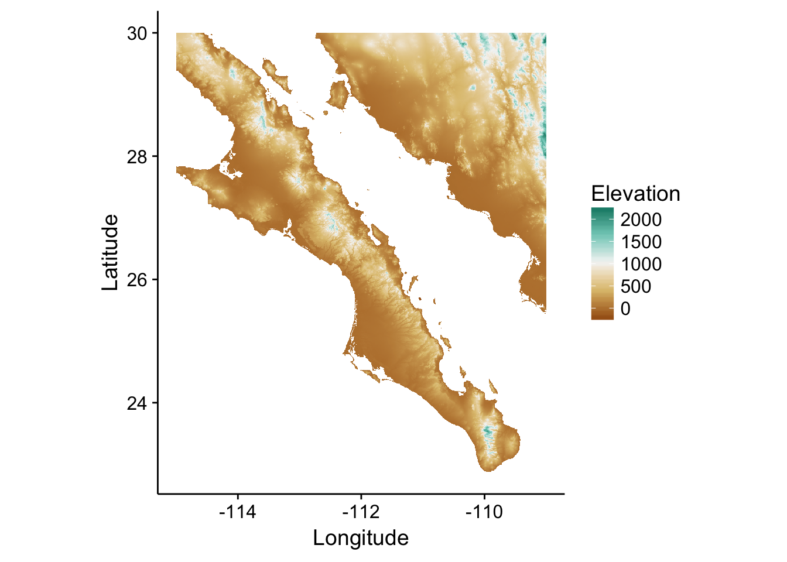
As usual, we can add additional information to the plot and as we would for any other ggplot object. Here I’ll add the populations and indicate if they have samples in them that are of one species (Pure) or have a mix of the two (Mixed).
num.clades <- colSums( table(arapat$Species, arapat$Population) > 0 )
Stratum=names(num.clades)
Species= factor( c("Pure","Mixed")[num.clades] )
tmp.df <- data.frame( Stratum, Species )
sites <- merge( coords, tmp.df )
p + geom_point( aes(x=Longitude,y=Latitude, shape=Species), size=3, data=sites )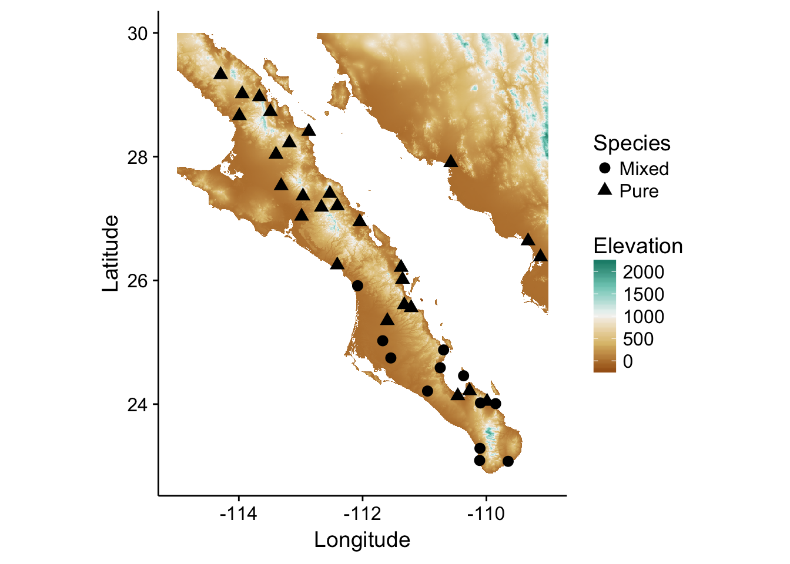
1.9 3D Visualization
It is also possible to visualize rasters in 3-space. The library rasterVis provides an interface to the rgl library to plot a surface. Once installed, these are easy to use for viewing surfaces. Here is an example using the elevation data we have been playing with.
library(rasterVis)
plot3D( baja_california , zfac=0.1)
The zfac option in the plot is the amount to scale the z-axis (elevation) in relation to the x-axis and y-axis dimensions. It is a bit exaggerated at zfac=0.1 but you get the idea.
1.10 Saving & Exporting Vector & Raster Objects
As all of these objects are R objects, they can be saved to disk using the save() function, which makes them a *.rda object. If you have objects that take a bit of time to create, it is in your best interests to save them after creation and on subsequent analyses, just use the saved versions.
There are many situations where you need to save a raster you’ve manipulated. As these raster objects are R objects, you can save them directly to the file system using the write() as:
write( baja_california, filename="baja_california.rda")This will save the raster object to file exactly like it is in your R session. To load it back in you just use load() and it is returned just like it was. The benefit to saving these as R objects is that you do not need to change it at all to pick up where you left off.
You may also need to export the vector or raster data into a non-R format for external analyses. A common format for vector data is the ubiquitous ESRI shapefile.
library(rgdal)
writeOGR( obj=SPDF, dsn="spatial_data", layer="SpatialPolyExample", driver="ESRI Shapefile")For rasters, you use the writeRaster() function. The file extension is used to determine the file format used and R saves it automatically.
writeRaster( baja_california, filename="baja_california.tif")1.11 Raster Manipulation
In this final section, we will delve into how to actually get data out of raster and vector components.
1.11.1 Cropping Rasters
Just because we have a large raster does not mean that it is in your best interest to use the entire object. Much of the spatial analyses routines used in population genetics require measurements of intervening distance, either Euclidean or ecological. Many of the routines for estimation of these distances require the estimation of pairwise distance between all pixels. For our purposes, the arapat dataset does not occur throughout most of this map, so it is in our best interests to use only the portion of the raster relevant to our data rather than the entire thing.
Here is one way of going this. I first define an extent, which consists of a vector representing the coordinates for xmin, xmax, ymin, and ymax (in decimal degrees longitude and latitude). You then crop() the raster to that extent.
library(sp)
library(raster)
alt <- raster("./spatial_data/alt.tif")
e <- extent( c(-115,-109,22,30) )
baja_california <- crop( alt, e )
plot(baja_california, xlab="Longitude",ylab="Latitude")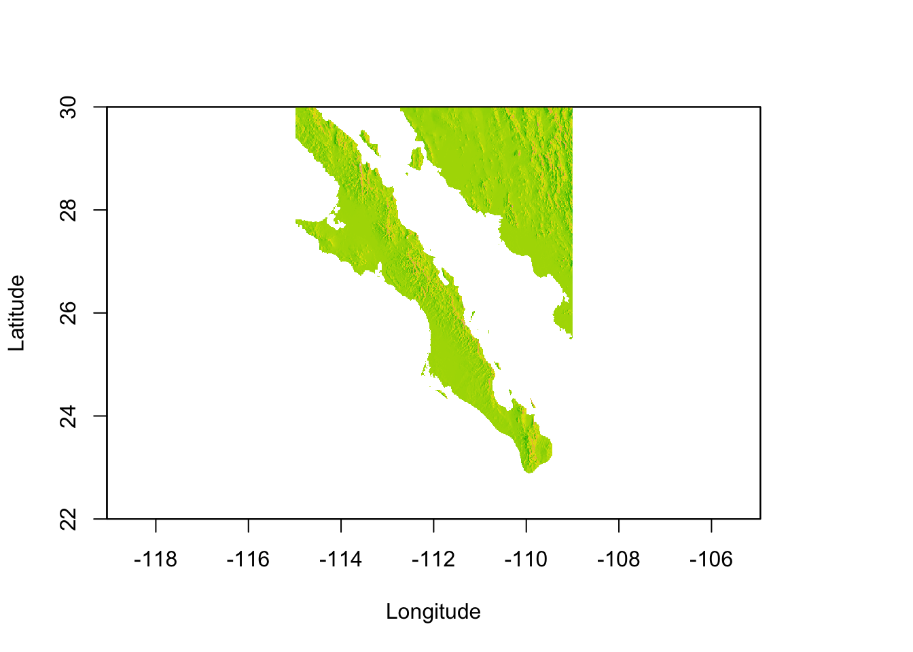
Lets make this base map a bit more pretty by taking the altitude and estimating the slope of each pixel and the direction it is facing (aspect). From this, we can ‘shade’ the hills in the map giving it more of a relief view we commonly see in maps. The optional parameters to hillShade provide the angle and direction of the light source.
slope <- terrain( baja_california, opt="slope" )
aspect <- terrain( baja_california, opt="aspect")
baja <- hillShade( slope, aspect, 40, 270 )
plot(baja, xlab="Longitude",ylab="Latitude", legend=FALSE)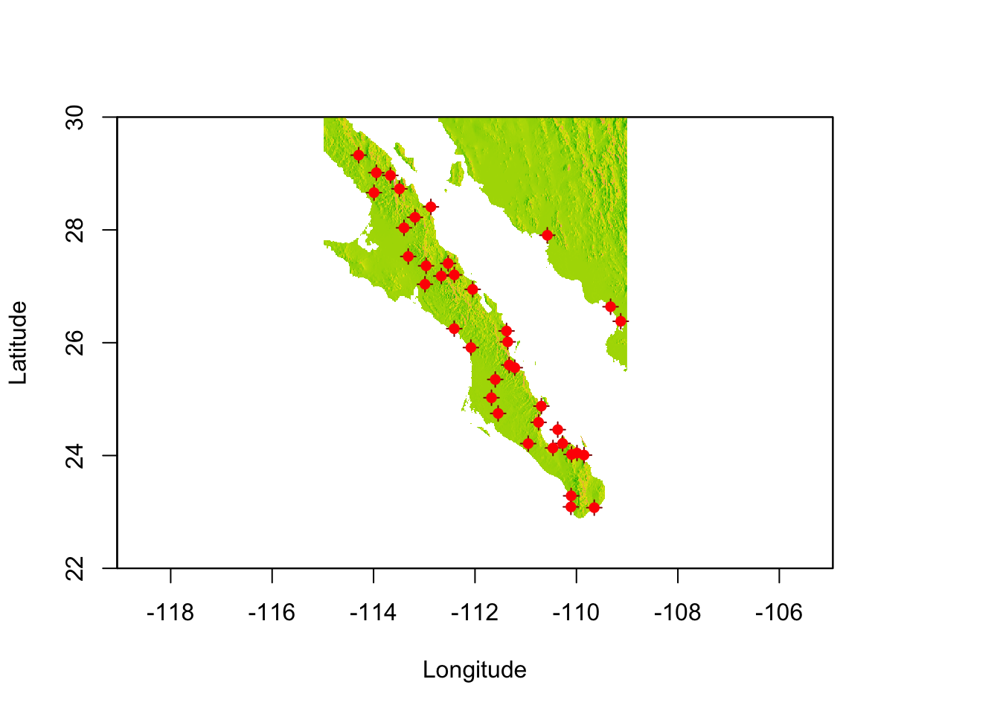
Onto this map, we can plot our populations. For this, we convert the raw coordinates into a SpatialPoints object and then overlay onto the map. I use two points() commands to make the symbol for each population.
library(gstudio)
data(arapat)
coords <- strata_coordinates(arapat)
pts <- SpatialPoints( coords[,2:3], proj4string = CRS(proj4string(baja)))
plot(baja, xlab="Longitude",ylab="Latitude", legend=FALSE)
points( pts, col="darkred", pch=3)
points( pts, col="red", pch=16)
1.11.2 Cropping Rasters Via Polygons
It is also possible to crop a raster with a more fine grained approach using a polygon. Here is an example using five points picked around the region of Loreto, BCS (I just grabbed these by looking at Google Earth). You define a polygon by a series of points, the last of which has to be identical to the first one so that the polygon is a closed object and not just a series of points on a crooked line…
pts <- rbind( c(-111.5,27.0),
c(-112.4,26.7),
c(-111.7,25.7),
c(-111.1,25.4),
c(-110.8,26.0),
c(-111.5,27.0) )
pts## [,1] [,2]
## [1,] -111.5 27.0
## [2,] -112.4 26.7
## [3,] -111.7 25.7
## [4,] -111.1 25.4
## [5,] -110.8 26.0
## [6,] -111.5 27.0From these points, we construct a SpatialPolygons object (see @ref{polygons} for more info on this convoluted construction) and then can overlay onto the map to make sure it in the correct vicinity (here we are eyeballing it a bit). For more on why this next line of code looks so crazy, see 1.5.3.
polys <- SpatialPolygons(list(Polygons(list(Polygon(pts)),"Polygon")))
plot(baja, legend=FALSE)
plot(polys, add=TRUE)
To use the polygon to crop the raster, we have to both remove the part of the raster that is not contained within the polygon (mask) and then cut down the remaining raster to change the bounding box to that representing the portion of the data that remains (trim). If you do not trim the raster, it will have the same amount of data associated with it as the previous raster (e.g., the underlying data matrix will have 960 rows and 720 columns) but the part that is masked will be represented by NA values. For many rasters, the data is held in-memory (see the entry for ’data sourcein the summary above) and as such removing as much of a raster that isNA` improves your ability to manipulate it better.
loredo <- trim( mask( baja, polys ) )
plot(loredo, xlab="Longitude",ylab="Latitude")Figure 1.7: Extraction of region within polygon from the full Baja California raster.
1.11.3 Cropping Rasters Via Convex Hull
An analysis common to modern population genetics is that of finding ecological distances between objects on a landscape. The estimation of pairwise distance derived from spatial data is a computationally intensive thing, one that if you are not careful will bring your laptop to its knees! One way to mitigate this data problem is to use a minimal amount raster area so that the estimation of the underlying distance graph can be done on a smaller set of points.
Cropping by a polygon like demonstrated in the previous example is a ‘by hand’ approach to estimating a box that roughly encompasses your data points. A more efficient one is one where you simply provide your coordinates and we can estimate a polygon that surrounds those coordinates with the minimal amount of wasted space. This is called a Convex Hull, which is kind of like a polygon that is created as if there was a rubber band fit around all your points. It is a minimal area that includes all of your points.
For this example, I’m going to use the populations found along the peninsula and find the minimal area encompassing those points.
baja_coords <- coords[ !(coords$Stratum %in% c("101","102","32")), ]
baja_pts <- SpatialPoints( baja_coords[,2:3])
plot(baja, legend=FALSE)
plot(baja_pts,add=T,col="darkred")
plot(baja_pts,add=T,col="darkred",pch=16)The methods for finding the hull and adding a buffer around it are found in the rgeos package. These are pretty easy functions to use and are very helpful. If you are having trouble installing the rgeos package from source, see my webpage (http://dyerlab.com), there is a short tutorial.
library(rgeos) # loads in gConvexHull & gBuffer functions
hull <- gConvexHull(baja_pts)
plot(baja, legend=FALSE)
plot(baja_pts,add=T,col="darkred")
plot(baja_pts,add=T,col="darkred",pch=16)
plot(hull,add=T,border="red")The function gConvexHull() returns an object of type SpatialPolygons, just like we created before. However, we now have a polygon that has each of our most ‘outward’ populations on the very edge of the polygon. It may be beneficial for us to add a buffer around this polygon.
hull_plus_buffer <- gBuffer(hull,width=.2)
plot(baja, legend=FALSE)
plot(baja_pts,add=T,col="darkred")
plot(baja_pts,add=T,col="darkred",pch=16)
plot(hull_plus_buffer, add=T, border="red")Now, we can mask and trim it to include only the area of interest.
pop_hull <- trim( mask(baja,hull_plus_buffer) )
plot(pop_hull, legend=FALSE, xlab="Longitude", ylab="Latitude")
plot(baja_pts,add=T,col="darkred",pch=16)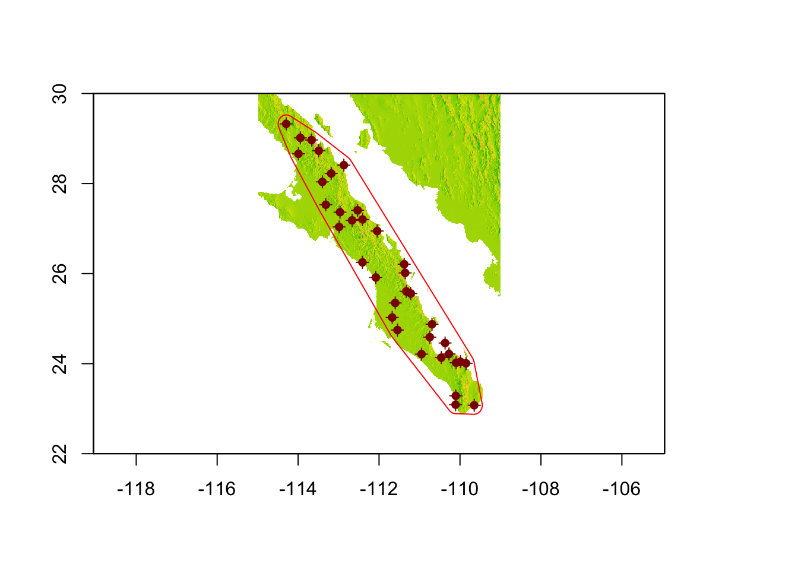
This would be a great raster to start looking at ecological separation in since we have removed the extraneous data that would unintentionally cause problems with the distance estimators.
1.11.4 Extracting Point Data From Rasters
So far, the rasters have been confined to representing a single static object. However, it is not uncommon to need to query a raster and find out the values at particular points. These points may be pre-defined or they may be dynamic (e.g., you need to point at a location on the map and determine the value there).
For queries of the first kind, we can use the extract() function. For this I downloaded the average temperature and precipitation rasters from Worldclim.
baja_temp <- raster("./spatial_data/bio1.tif")
baja_prec <- raster("./spatial_data/bio12.tif")And then extract the values from each of these layers into the coords data we already have set up.
coords$elevation <- extract( baja_california, coords[,c(2,3)])
coords$mean_temp <- extract( baja_temp, coords[,c(2,3)])
coords$mean_precip <- extract( baja_prec, coords[,c(2,3)])
coords[1:10,]## Stratum Longitude Latitude elevation mean_temp mean_precip
## 1 88 -114.2935 29.32541 681 178 143
## 11 9 -113.9449 29.01457 361 195 148
## 20 84 -113.6679 28.96651 368 197 124
## 29 175 -113.4897 28.72796 240 205 106
## 36 177 -113.9914 28.66056 177 203 120
## 46 173 -112.8698 28.40846 26 223 102
## 56 171 -113.1826 28.22308 522 195 145
## 66 89 -113.3999 28.03661 290 203 117
## 76 159 -113.3161 27.52944 87 211 123
## 85 SFr -112.9640 27.36320 305 205 107A note should be made on the temperature and precipitation values. Temperature is denoted in tenths of a degree Celsius. Though it does get quite hot at times, it does not average 188°C at population 88! Similarly, the units for precipitation are mm (or tenths of centimeters if you will…).
library(ggrepel)
coords <- coords[ order(coords$Latitude),]
p <- ggplot( coords, aes(x=Latitude,y=elevation)) + geom_line(color="lightgrey")
p <- p + geom_point() + ylab("Elevation (m)")
p + geom_text_repel(aes(label=Stratum), color="red") 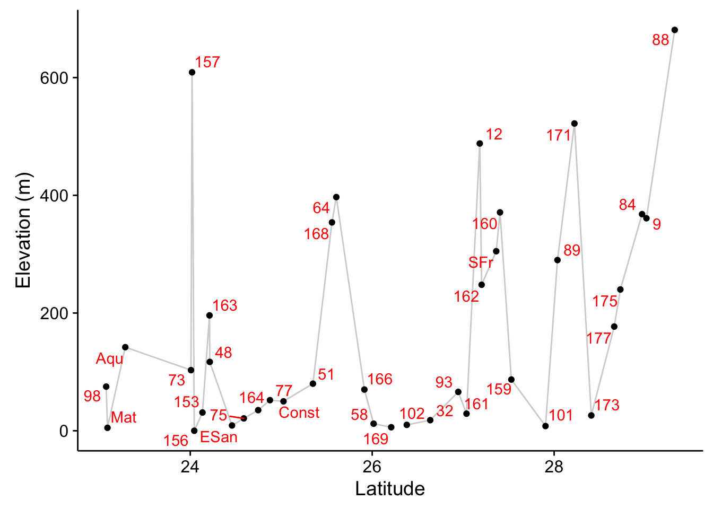
The package ggrepel provides a pseudo-smart labeling geometry for ggplot allowing you to have labels that are shifted around the points so as to maximize visibility.
For inquires of the second type, we can use the function click() to retrieve one of several outputs. Here is the help file that describes the various components.
click {raster} R Documentation
Query by clicking on a map
Description
Click on a map (plot) to get values of a Raster* or Spatial* object at that location; and optionally the coordinates and cell number of the location. For SpatialLines and SpatialPoints you need to click twice (draw a box).
Usage
## S4 method for signature 'Raster'
click(x, n=Inf, id=FALSE, xy=FALSE, cell=FALSE, type="n", show=TRUE, ...)
## S4 method for signature 'SpatialGrid'
click(x, n=1, id=FALSE, xy=FALSE, cell=FALSE, type="n", ...)
## S4 method for signature 'SpatialPolygons'
click(x, n=1, id=FALSE, xy=FALSE, type="n", ...)
## S4 method for signature 'SpatialLines'
click(x, ...)
## S4 method for signature 'SpatialPoints'
click(x, ...)
Arguments
x - Raster*, or Spatial* object (or missing)
n - number of clicks on the map
id - Logical. If TRUE, a numeric ID is shown on the map that corresponds to the row number of the output
xy - Logical. If TRUE, xy coordinates are included in the output
cell - Logical. If TRUE, cell numbers are included in the output
type - One of "n", "p", "l" or "o". If "p" or "o" the points are plotted; if "l" or "o" they are joined by lines. See ?locator
show - logical. Print the values after each click?
... - additional graphics parameters used if type != "n" for plotting the locations. See ?locator
Value
The value(s) of x at the point(s) clicked on (or touched by the box drawn).
Note
The plot only provides the coordinates for a spatial query, the values are read from the Raster* or Spatial* object that is passed as an argument. Thus you can extract values from an object that has not been plotted, as long as it spatially overlaps with with the extent of the plot.
Unless the process is terminated prematurely values at at most n positions are determined. The identification process can be terminated by clicking the second mouse button and selecting 'Stop' from the menu, or from the 'Stop' menu on the graphics window.
See Also
select, drawExtent
Examples
r <- raster(system.file("external/test.grd", package="raster"))
#plot(r)
#click(r)
#now click on the plot (map)
Here is the output from a single inquire on the baja_california raster map, asking for both the coordinates and the elevation of a particular location.
plot( baja_california, legend=FALSE)
click(baja_california, xy=TRUE)
## x y value
## 1 -113.3875 27.82083 116In a similar fashion, you can interactively create polygon points.
> cape_pts <- click(baja_california, n=5, xy=TRUE, type="p")and after you have selected the points, you get something like.

Raster points around the Cape region identified manually.
with the data as:
cape_pts## x y value
## 1 -109.9542 24.22917 NA
## 2 -110.7542 23.66250 NA
## 3 -110.1042 22.77917 NA
## 4 -109.2625 23.06250 NA
## 5 -109.3042 23.77917 NAThis is an extremely helpful approach for cropping and manipulating your raster layers.
1.11.5 Extracting Neighborhood Data from Rasters
Just as with points, we can also extract data around individual locations defined by either points with a buffer or from a polygon. The first approach requires us to put a buffer around the coordinate points and then extract the raster data. I’ll use the five most southern sites as an example.
coords <- coords[ order( coords$Latitude) , ]
cape_coords <- coords[1:5,]
pts <- SpatialPoints( cape_coords[,2:3] )
proj4string(pts) <- CRS(proj4string(baja_california))
pts## class : SpatialPoints
## features : 5
## extent : -110.1091, -109.6487, 23.0757, 24.0195 (xmin, xmax, ymin, ymax)
## coord. ref. : +proj=longlat +datum=WGS84 +no_defs +ellps=WGS84 +towgs84=0,0,0These points are in the Cape region, which we can crop out of the baja_california raster as using the cape_pts we clicked out to form a polygon:
cpts <- SpatialPoints( cape_pts[,1:2] )
b <- bbox( cpts )
cape <- crop(baja_california, b)
plot(cape, xlab="Longitude", ylab="Latitude")
plot( pts, add=TRUE)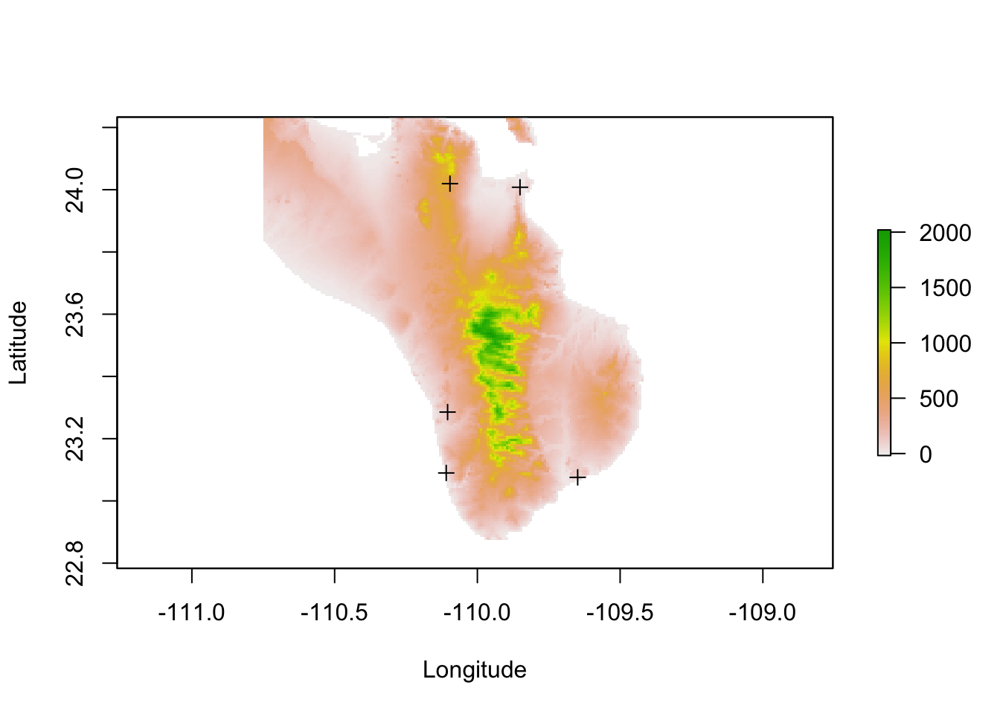
We can buffer these points
buff <- gBuffer(pts, byid=TRUE, width=0.01)
plot( cape )
plot( buff, add=TRUE)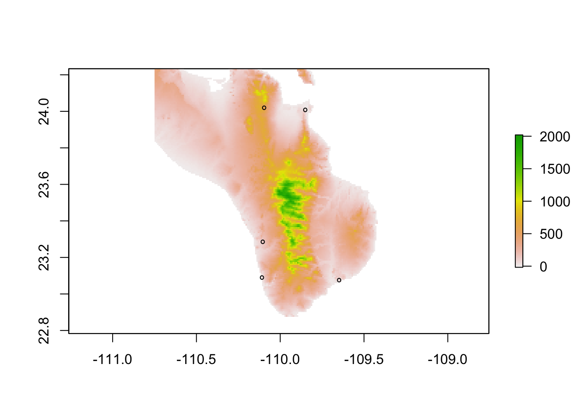
And we can extract the data from within those polygons for each of the five regions.
vals <- extract( cape, buff )
vals## [[1]]
## [1] 79 75 28 37
##
## [[2]]
## [1] 11 57 5 72
##
## [[3]]
## [1] 115 142 161 132
##
## [[4]]
## [1] 28 16 103 26
##
## [[5]]
## [1] 584 651 609 510 597You can do the same thing for larger polygons, as we established above when we drew the polygon around Loreto, BCS.
plot( baja, legend=FALSE )
plot( polys, add=TRUE)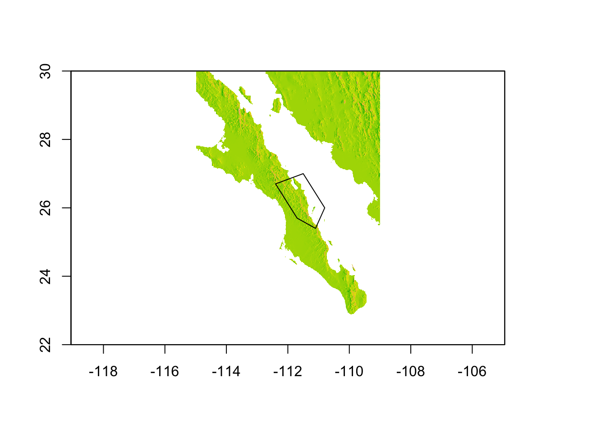
The resulting data is just a lot bigger in size.
data <- extract( baja_california, polys )
length( data[[1]])## [1] 192261.11.6 Reprojecting Rasters
When working with rasters, we can reproject these onto other projections rather easily. Here is an example from the worldclim elevation tile we used previously.
alt <- raster("LGDA-Data/bioclim/alt_22.tif")
e <- extent( c(-115,-109,22,30) )
baja_california <- crop( alt, e )
baja_california## class : RasterLayer
## dimensions : 960, 720, 691200 (nrow, ncol, ncell)
## resolution : 0.008333333, 0.008333333 (x, y)
## extent : -115, -109, 22, 30 (xmin, xmax, ymin, ymax)
## coord. ref. : +proj=longlat +datum=WGS84 +no_defs +ellps=WGS84 +towgs84=0,0,0
## data source : in memory
## names : alt_22
## values : -202, 2263 (min, max)We can now project it to another projection, lets say Lambert Conic Conformal.
library(rgdal)
projection(baja_california)## [1] "+proj=longlat +datum=WGS84 +no_defs +ellps=WGS84 +towgs84=0,0,0"baja_lcc <- projectRaster( baja_california, crs="+proj=lcc +lat_1=48 +lat_2=33 +lon_0=-100 +ellps=WGS84")
baja_lcc## class : RasterLayer
## dimensions : 1060, 878, 930680 (nrow, ncol, ncell)
## resolution : 845, 935 (x, y)
## extent : -1610637, -868727, 2790826, 3781926 (xmin, xmax, ymin, ymax)
## coord. ref. : +proj=lcc +lat_1=48 +lat_2=33 +lon_0=-100 +ellps=WGS84
## data source : in memory
## names : alt_22
## values : -202, 2205.154 (min, max)These two projections influence the region as shown below.
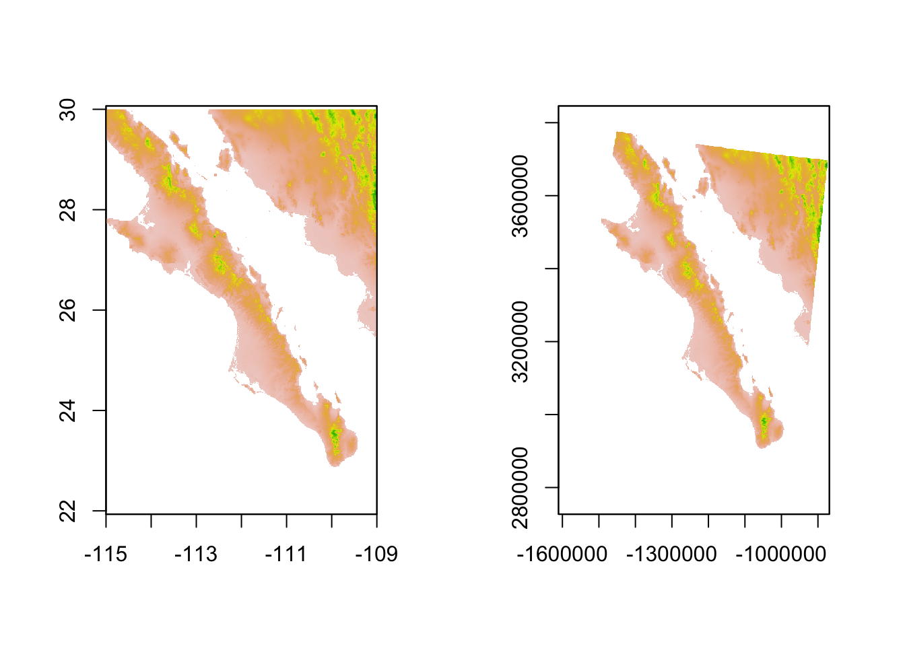
As usual, there is probably a way to plot these values in ggplot to make the output just a little bit more awesome. Projections of data in ggplot displays can be manipulated by appending a coord_* object to the plot as we showed above. Here are two examples using a Mercator and azimuth equal area projection of the state maps.
library(ggplot2)
states <- map_data("state")
map <- ggplot( states, aes(x=long,y=lat,group=group))
map <- map + geom_polygon( fill="white",color="black")
map <- map + xlab("Longitude") + ylab("Latitude")
map + coord_map("mercator") 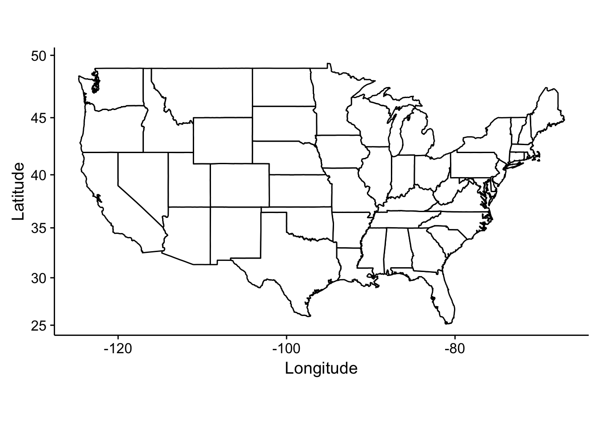
Conversely, we can plot it using the equal area Azimuth projection
map + coord_map("azequalarea")or fish-eye
map + coord_map("fisheye",par=3)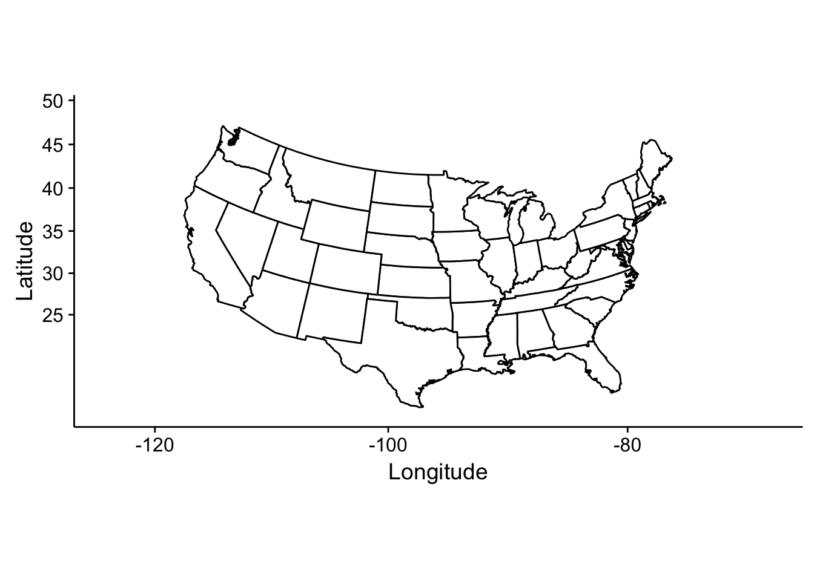
or any other projection available listed in the mapproject() function.
1.12 Questions
The WorldClim organization makes a set of bioclimatic data available for free. Grab the raster layers for Tile 22 (they are in the LGDA-Data folder) and crop them down to an extent that covers the entirety of sampling locations for the arapat data set.
Using the population locations in the arapat dataset, extract the value for each layer. To what extent are these variables correlated with each other? At what point will we need to be concerned if we are using them as input into statistical models?
Is there more variation in elevation in a circular neighborhood around Loreto (Lon: -111.343333, Lat: 26.012778 ) or Guerrero Negro (Lon: -114.056111, Lat:27.958889)? Use a buffer width of 0.04.
Which sampling location is highest in elevation? Which has the hottest summers?